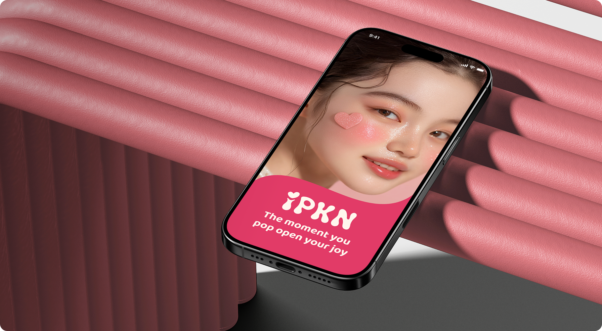
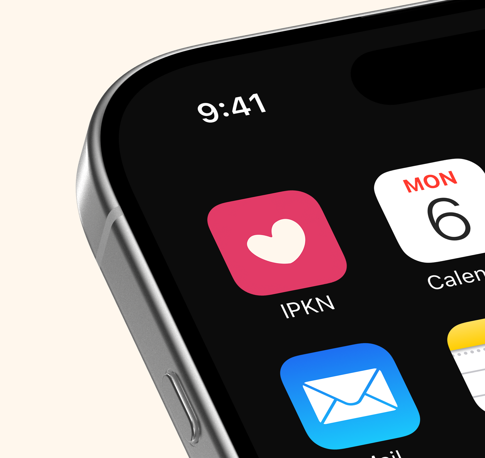

IPKN
(2025)The moment you pop open your joy
This project focused on redesigning a Korean cosmetic brand known for its affordable image and popularity among the 10–20s generation. The brand, originally recognized for its collaboration line with Daiso, required a refreshed identity that feels youthful, trendy, and trustworthy while maintaining its approachable, budget-friendly character. Through color redefinition, typography refinement, and package system redesign, the project aimed to reposition the brand as a modern and energetic choice for young consumers.


Keyfindings Research
Translating Youth Trends Into Meaningful Brand Direction.